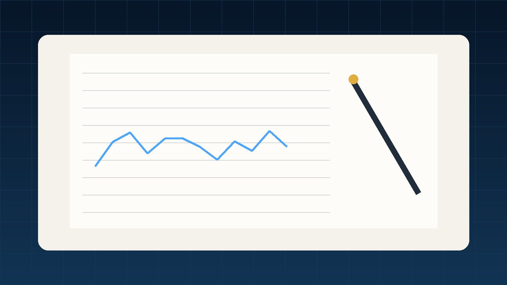

ETF 배당금으로 흔히 부르는 분배금의 의미, 지급 기준일, 분배락, 지급주기, 재투자와 세금까지 초보자가 알아야 할 내용을 정리했습니다. ETF는 이름만 비슷해도 기초지수와 비용, 세금, 위험이 달라질 수 있기 때문에 하나의 숫자만 보고 선택하기보다 구조를 순서대로 이해하는 것이 중요합니다.

초행파트너스 투자 콘텐츠는 시장·기업·리스크 관점의 분석 기준을 바탕으로 구성합니다.
- ETF 배당금의 핵심 개념
- 초보자가 놓치기 쉬운 비용과 위험
- 실제 매수 전 확인할 체크포인트
- 관련 ETF 콘텐츠 내부링크
1. ETF에서는 보통 분배금이라는 표현을 사용합니다
ETF가 보유한 주식의 배당금이나 채권 이자 등을 투자자에게 나누어 지급하는 금액을 분배금이라고 합니다. 일상적으로 ETF 배당금이라고 부르지만 상품 공시에서는 분배금이라는 표현을 확인할 수 있습니다.
2. 분배금 지급주기는 ETF마다 다릅니다
월별, 분기별, 반기별 등 지급주기가 다양하며 분배를 하지 않고 내부적으로 재투자하는 구조도 있을 수 있습니다. 투자 전 운용사 공시에서 분배정책을 확인하세요.

3. 기준일과 분배락을 이해해야 합니다
분배금을 받기 위해서는 해당 ETF의 기준일과 결제일정을 고려해야 합니다. 분배락일에는 분배금만큼 가격이 조정될 수 있어 지급 자체를 공짜 수익으로 보면 안 됩니다.
4. 분배율이 높다고 무조건 좋은 상품은 아닙니다
높은 분배율이 원금 성장보다 우월하다는 의미는 아닙니다. 기초자산 가격 하락이나 옵션전략 등으로 높은 현금흐름이 만들어질 수 있어 총수익 관점에서 봐야 합니다.
5. 분배금 재투자는 복리 효과와 연결됩니다
받은 분배금을 다시 투자하면 장기적으로 보유수량이 늘어날 수 있습니다. 다만 세금과 거래비용, 재투자 시점도 함께 고려해야 합니다.

6. 세금은 상품 유형에 따라 달라질 수 있습니다
국내주식형 ETF와 기타 ETF, 해외 상장 ETF의 분배금 과세 구조는 다를 수 있습니다. 실제 투자 전 자신의 상품 유형을 확인하는 것이 중요합니다.
7. 현금흐름 목적이라면 지급 안정성도 확인하기
단순히 최근 한 번의 분배금만 보지 말고 과거 지급기록과 기초자산의 현금흐름, 분배정책을 함께 확인하는 것이 좋습니다.
ETF 배당금 자주 묻는 질문 8가지
ETF 배당금과 분배금은 같은 뜻인가요?
일상적으로 비슷하게 쓰지만 ETF에서는 분배금이라는 표현을 주로 사용합니다.
ETF 분배금은 매달 나오나요?
상품마다 월·분기·반기 등 지급주기가 다릅니다.
분배금이 높으면 수익률도 높은가요?
반드시 그렇지 않습니다. 가격 변동과 세금까지 포함한 총수익을 봐야 합니다.
분배락일에는 왜 가격이 내려가나요?
분배할 자산가치가 빠져나간 만큼 이론적으로 기준가격이 조정될 수 있기 때문입니다.
분배금을 자동 재투자할 수 있나요?
증권사와 상품에 따라 자동재투자 기능 여부가 다를 수 있습니다.
ETF 분배금에도 세금이 있나요?
상품 유형과 계좌에 따라 과세될 수 있으므로 개별 상품 기준을 확인해야 합니다.
분배금을 받으려면 언제까지 사야 하나요?
기준일과 결제일정이 중요하므로 운용사 공시와 증권사 안내를 확인하세요.
배당 ETF는 장기투자에 무조건 유리한가요?
현금흐름은 장점이 될 수 있지만 성장성, 비용, 세금과 총수익을 함께 판단해야 합니다.